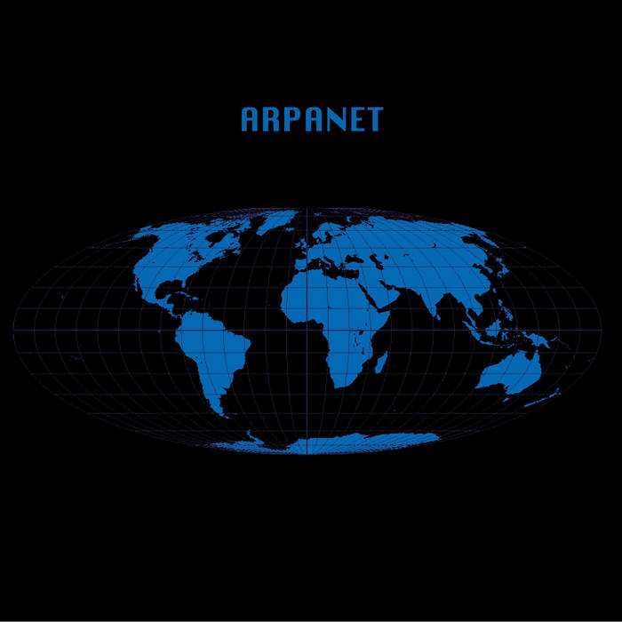

Internet |
|
MENUInício Internet HTML WWW Navegador Primeiro Site |
Origem da internetA internet é uma rede global que conecta milhões de dispositivos ao redor do mundo, permitindo a
troca de informações de forma rápida e acessível. Por meio dela,  A ARPANET foi a primeira rede a utilizar o conceito de comutação de pacotes, uma tecnologia que
divide as |
Júlio Vieira 1c3 - Lucas Zelioli - Site educacional - 23/03/26 |
|